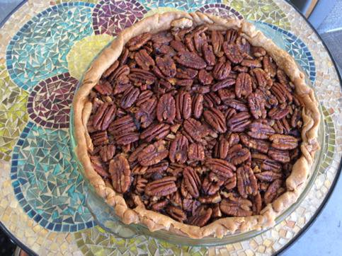

Maple Old Fashioned Pecan Pie

Slightly altered from Simply Recipes - Pecan Pie. This uses maple syrup instead of corn syrup, and I made sure to fill it with just so many pecans. Also, orange zest and whiskey. Because why not?
- 1 9-inch pie shell, frozen (freeze for half an hour if fresh). I also like to butter the pie dish before putting the crust in. Because butter makes things good.
- 3 cups pecans, coarsely chopped (save a few whole pecan halves to create a decoration on the surface of the pie if you want)
- Another cup of pecans. Just… so many pecans. Don’t skimp.
- 3 eggs, slightly beaten
- 1 cup maple syrup
- ½ cup brown sugar
- 1 Tbsp molasses
- 4 Tbsp butter, melted
- Another Tbsp of butter
- ½ teaspoon salt (Unless the butter is salted, then skip, or use less)
- 2 teaspoon vanilla
- 1 Tbsp Bourbon or Rye whiskey
- ½ tsp or so orange zest (I just zested most of one orange. Didn’t actually measure it. Life is short.)
Preheat oven to 350°F. In a small bowl mix together the eggs, brown sugar, corn syrup, molasses, melted butter, vanilla, salt, orange zest, and whiskey until smooth and consistent texture and color. (The butter will tend to separate out a bit.)
Fill the frozen pie shell with pecans. Put the more chopped pecans at the bottom, and make sure to have plenty of pecan halves on the top. Pat them down flat as you put them in, so that you don’t have big gaps.
Stir the filling a little if it’s separated.
Pour the filling over the pecans. Don’t worry about burying the pecans, they will rise to the surface.
If you wanna get fancy, spread some unchopped pecans over the top in a decorative way. Just dip them below the wet filling and let them rise again so they get coated with the filling.
Make sure that any exposed pecans have a good coating of filling.
Melt the other Tbsp of butter, and brush over the inside edge of the exposed crust. Then pour any remaining over the top. Waste no butter.
Bake at 350°F for 30 minutes.
After 30 minutes tent the pie loosely with aluminum foil to prevent the crust and pecans from getting too browned. Bake for another 40 to 50 minutes until the filling has set. The pie should be just barely wiggly in the center.
Remove from oven and let cool completely, about 1 hour.
Note that the pie will be puffed up a bit when you first take it out of the oven, it will settle as it cools.